← Index · ← Previous · Next →
Authors: César Benito, I. Jesán Velázquez-Reséndiz, Alejandro Bermudez
Type: theory · Category: quantum information and computing · PDF: https://arxiv.org/pdf/2606.17709v1
Analysis basis: full PDF text, analyzed in chunks
Topic relevance: QC/QI experiment 2/5 · correlated / nonlocal dissipation 1/5 · driven-dissipative phase transition 1/5 · entanglement & information structure 1/5 · methods for driven-dissipative 1/5 · non-equilibrium dynamics 1/5
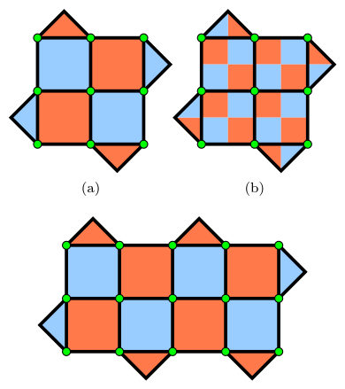
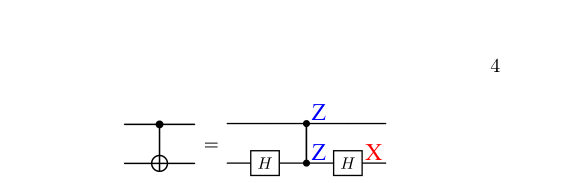
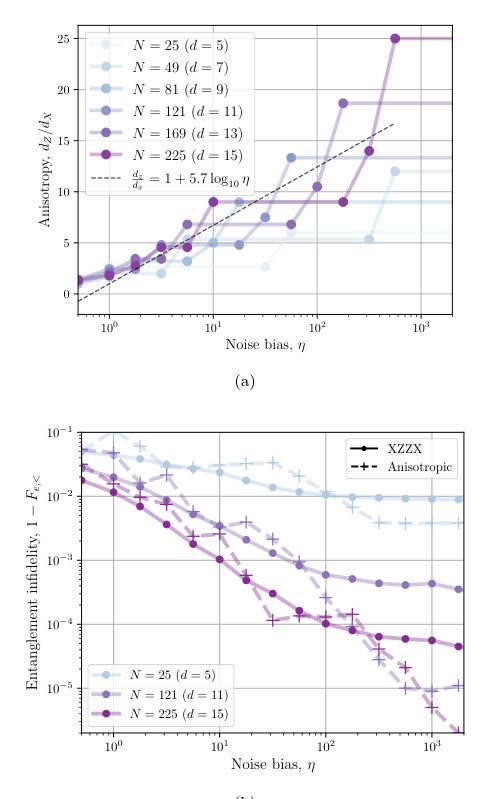
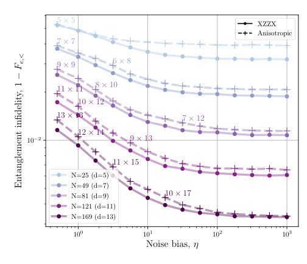
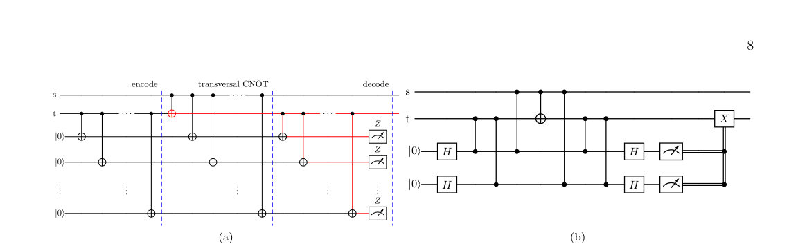
Summary. This paper investigates Quantum Error Correction codes designed for biased noise, finding that idealized theoretical advantages vanish under realistic circuit noise. The authors introduce a 'bias-filtering gadget' into the XZZX code structure, demonstrating that this lightweight hardware modification can recover a measurable portion of the lost bias advantage by protecting the physical noise asymmetry during syndrome measurement.
Why it may be interesting. It directly addresses the gap between theory (ideal code capacity) and practice (noisy circuits), providing concrete mitigation techniques for hardware-specific error biases relevant to trapped ion or superconducting qubit platforms.
Main problem. The study evaluates how much the theoretical advantage of bias-tailored Quantum Error Correction (QEC) codes diminishes when moving from idealized noise models to realistic circuit-level noise.
Main result. Under realistic circuit noise, the predicted advantages are significantly reduced because syndrome extraction itself degrades the physical noise asymmetry; however, a lightweight 'bias-filtering gadget' can partially recover this lost advantage.
Method. The authors compare code performance using both idealized code-capacity simulations and detailed circuit-level noise models incorporating gate errors and ancillary qubit encoding/decoding gadgets.
Model / system. The work compares XZZX codes against anisotropic rectangular surface codes, analyzing their resilience to partially-biased dephasing noise common in physical quantum hardware platforms like trapped ions or spin qubits.
Key observables. QEC error thresholds (p_th), entanglement infidelity ($ ext{Fe}_L$), and the relative improvement factor provided by the bias-filtering gadget.
Important parameters / regimes. Noise bias ($\eta$), circuit complexity, code distance ($d$), and the ratio of idle to gate errors ($p_{id}/p_{2q}$).
Assumptions / limitations. The analysis assumes that syndrome extraction circuits introduce noise that degrades the initial physical noise asymmetry, which is the central limitation being overcome.
Figures summary. Figures compare code performance under ideal vs. circuit-level noise; one figure illustrates the bias-filtering gadget using a repetition code structure during syndrome measurement.
Paper structure. The paper progresses by first establishing the theoretical advantage in idealized models, then demonstrating how this advantage collapses under realistic circuit noise due to syndrome extraction errors, and finally proposing and analyzing a specific 'bias-filtering CNOT gadget' to mitigate this degradation.
We find that the substantial advantages predicted for bias-tailored quantum error correction (QEC) under code-capacity noise are strongly reduced once realistic syndrome extraction and circuit-level noise models are considered. We start by comparing XZZX codes to rectangular surface codes with a bias-dependent optimised anisotropy. Although code-capacity simulations predict an advantage of rectangular surface codes in the limit of high noise bias, this actually disappears under circuit-level noise, making the XZZX codes the preferred and simplest choice even for platforms that allow for a flexible variation of the code layout adapted to changes in noise calibration. Our results identify bias degradation during syndrome extraction under circuit-level noise as the central limitation of biased-tailored QEC. To partially mitigate this effect, we introduce a bias-filtering CNOT gadget that temporarily encodes the ancillary target qubit during syndrome extraction in a repetition code and, upon measurement and feed forward, manages to reduce the bias degradation. In a regime of high-bias and low-idle errors, this bias-filtering gadget yields a few-percent relative improvement of the XZZX code error threshold, demonstrating that lightweight bias-filtering strategies can recover part of the lost bias-tailoring advantage for realistic circuit-level noise.
Authors: E. E. Perepelkin, B. I. Sadovnikov, N. G. Inozemtseva, V. A. Svetovidov
Type: theory · Category: other · PDF: https://arxiv.org/pdf/2606.17548v1
Analysis basis: full PDF text, analyzed in chunks
Topic relevance: Keldysh / 2PI / non-Gaussian methods 2/5 · methods for driven-dissipative 2/5 · exotic spin models in light-matter 1/5 · non-equilibrium dynamics 1/5
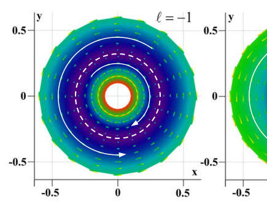
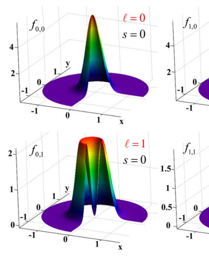
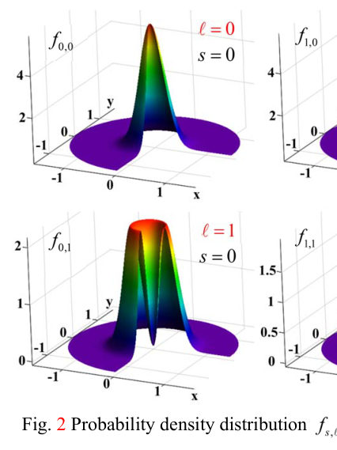
Summary. This theoretical work analyzes the kinematics of the Pauli equation using advanced formalisms like Wigner-Vlasov. It demonstrates that the spinorial nature leads to a splitting of probability flux and derives coupled Hamilton-Jacobi equations for both the Pauli and Schrödinger systems. The paper is significant for establishing deep mathematical consistency between these fundamental quantum descriptions in electromagnetic environments.
Why it may be interesting. The rigorous mathematical connection drawn between the spinorial nature of the Pauli equation and classical/semi-classical Hamilton-Jacobi mechanics is highly relevant for understanding quantum dynamics in external fields, bridging foundational QM theory with semi-classical methods.
Main problem. The paper investigates the kinematic properties of quantum systems governed by the Pauli equation, comparing its dynamics to those described by the Schrödinger equation.
Main result. It establishes that the probability flux associated with the Pauli equation splits into two components corresponding to its spinor structure, and derives analogous Hamilton-Jacobi equations for both systems.
Method. The analysis heavily utilizes the Wigner-Vlasov formalism, employing Helmholtz decomposition and deriving coupled sets of differential equations for potentials and fluxes.
Model / system. The primary model is a spin-1/2 particle governed by the Pauli equation in external electromagnetic fields. The comparison system is the standard Schrödinger equation counterpart.
Key observables. Probability current flux ($\mathbf{v}_1, \mathbf{v}_2$), quantum potential ($Q$), Hamilton-Jacobi functions ($H_n$), and magnetic moment ($\mathbf{\mu}_s$).
Important parameters / regimes. Uniform magnetic fields, asymmetric quadratic potentials, and the spin coupling constant (related to the Bohr magneton).
Assumptions / limitations. The analysis relies on specific gauge choices (e.g., Lorenz $\Psi$-gauge) and approximations within the Wigner-Vlasov expansion.
Figures summary. Figure 1 illustrates the probability flux distribution ($v_\lambda ho$) for different spin components ($\lambda$), showing directional flow relative to color coding.
Paper structure. The paper proceeds by first introducing the Wigner-Vlasov formalism, deriving analogues of H-J equations and motion equations (Theorem 1), then constructing a formal link between Pauli and Schrödinger dynamics (Theorem 2), establishing field consistency with Maxwell's equations (Theorem 4), and concluding with explicit solutions for specific potentials.
Based on the Wigner-Vlasov formalism, this paper investigates the kinematic properties of the Pauli equation. It is shown that the probability current associated with the Pauli equation can be represented as a superposition of two currents with certain expansion coefficients. Each of these currents corresponds to a particular component of the spinor. The expansion coefficients effectively serve as weighting functions that determine the probability contribution of the corresponding spinor component. Therefore, each spin projection corresponds to its own probability flux. A new system of the Hamilton-Jacobi equations and also a system of motion equations in electromagnetic fields are obtained, taking into account the interaction between the spin and the magnetic field. To illustrate how these equations can be applied we have investigated the quantum system kinematics in detail using an exact solution of the Pauli equation in the presence of a uniform magnetic field and an asymmetric quadratic potential.
Authors: Hirokazu Maruoka
Type: theory · Category: statistical mechanics · PDF: https://arxiv.org/pdf/2606.17179v1
Analysis basis: full PDF text, analyzed in chunks
Topic relevance: non-equilibrium dynamics 2/5 · non-equilibrium universality 2/5 · Keldysh / 2PI / non-Gaussian methods 1/5 · driven-dissipative phase transition 1/5
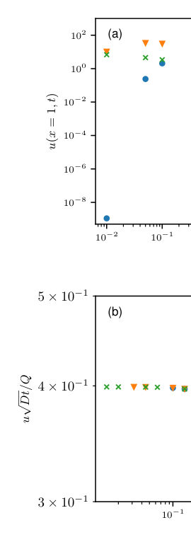
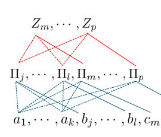
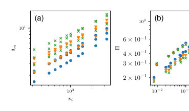
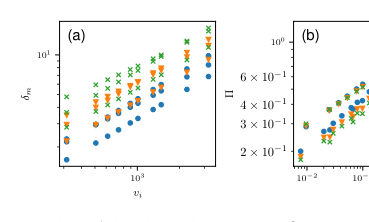
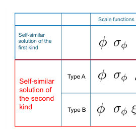
Summary. This work provides a deep theoretical framework showing that self-similarity arises from scale invariance. It unifies dimensional analysis by proving it works because physical units and parameters share underlying scaling symmetries. The paper classifies all such solutions into three types based on the mathematical structure of their associated scale functions.
Why it may be interesting. While not directly about quantum systems, the rigorous mathematical machinery developed for classifying scale invariance and dimensional reduction is highly relevant to analyzing critical phenomena or asymptotic regimes in complex many-body statistical mechanics models.
Main problem. To develop a unified framework for understanding dimensional analysis by rigorously formulating self-similarity from the perspective of scale invariance.
Main result. The paper establishes that there are three distinct kinds of self-similar solutions (Type I, II A, and II B) based on how intrinsic scale functions relate to unit transformations. It proves that dimensional analysis works because it exploits the partial sharing of scale invariance between physical units and parameters.
Method. The core method involves applying group theory concepts related to scale transformations ($\sigma$) to governing equations, comparing these mathematical invariances with those derived from physical units, and classifying the resulting solutions hierarchically.
Model / system. The analysis is applied to various physical models, including one-dimensional diffusion processes, viscoelastic impact dynamics, and modified groundwater flow problems governed by non-linear partial differential equations.
Key observables. Self-similar profiles ($\Phi$), data collapse plots, and the structure of similarity parameters ($\Pi, Z$).
Important parameters / regimes. Scale factors ($A$), power exponents ($\alpha_{ik}$), dimensionless numbers (e.g., $c$ in groundwater flow).
Assumptions / limitations. The derivation assumes that scale functions derived from unit structures can be applied to physical parameters due to the indistinguishability of their numerical transformations.
Figures summary. Figures illustrate data collapse for diffusion processes and show hierarchical relationships between different classes of similarity parameters (First Class $ ightarrow$ Second Class).
Paper structure. The paper progresses by first defining scale invariance, then applying it to specific PDEs (diffusion, groundwater flow) to derive initial similarity forms. It then develops a general mathematical framework comparing unit scaling vs. parameter scaling, leading to the final three-fold classification of self-similarity.
In this work, we formulate self-similarity from the perspective of scale invariance, where a self-similar form is understood as the transformation of a function into a form invariant under scale transformations. By applying this formulation to physical parameters, which consist of numerical values and units, it is demonstrated that dimensional analysis works for physical problems because scale invariance is partially shared between units and physical parameters. This naturally leads to the distinction between similarity of the first kind and similarity of the second kind according to whether the scale functions induced by units and those associated with physical parameters are equivalent or not. Self-similar solutions of the second kind can be further classified according to whether the power exponents of the similarity parameters include functions of dimensionless numbers. This leads to the conclusion that there are three kinds of self-similar solutions. The present work provides a unified framework for understanding dimensional analysis and a universal classification of self-similarity in physical problems.
Authors: Daryoush Shiri, Likai Yang, Mohamed A. Hassan, Philip Krantz, Eric T. Holland
Type: theory · Category: quantum information and computing · PDF: https://arxiv.org/pdf/2606.17338v1
Analysis basis: full PDF text, analyzed in chunks
Topic relevance: QC/QI experiment 2/5 · driven-dissipative phase transition 1/5 · methods for driven-dissipative 1/5 · non-equilibrium dynamics 1/5
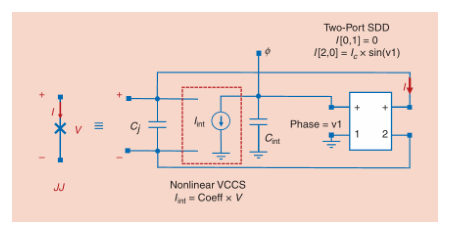
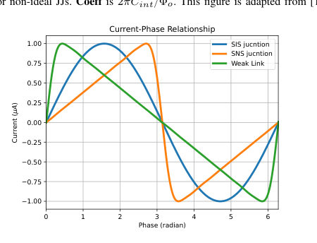
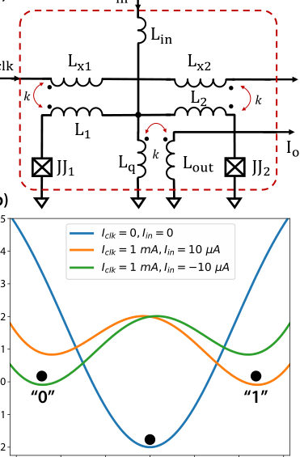
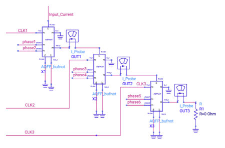
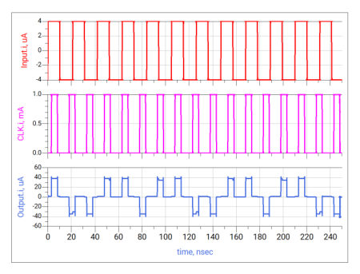
Summary. This paper analyzes the performance of Adiabatic Quantum Flux Parametron gates, crucial for cryogenic superconducting electronics. It models how non-ideal Josephson junctions (SNS and WL) deviate from ideal sinusoidal behavior by using polynomial expansions in circuit simulations. The results quantify these deviations, showing that junction type dictates critical trade-offs between switching speed, current swing, and operational margin.
Why it may be interesting. This work directly addresses hardware limitations in superconducting quantum computing by analyzing how material imperfections (non-sinusoidal CPRs) impact fundamental logic gate performance metrics like speed and energy dissipation.
Main problem. The study investigates how non-sinusoidal current-phase relations (CPR) in Josephson junctions affect the performance of Adiabatic Quantum Flux Parametron (AQFP) gates.
Main result. Non-ideal junction types (SNS and WL) significantly alter the switching dynamics, delay, and stability margins compared to ideal SIS junctions, demonstrating trade-offs between speed and current swing for cryogenic digital processing.
Method. The authors used symbolic device modeling within the Keysight ADS simulator to analyze transient behavior of AQFP circuits under various junction models.
Model / system. The system is based on AQFP logic gates, superconducting circuits utilizing SQUID loops containing Josephson Junctions (JJ). The model compares ideal SIS junctions against non-ideal SNS and WL junctions by incorporating their respective CPRs into the circuit simulation.
Key observables. Switching speed, delay, output current swing ($\mu$A), and signal integrity in a 3-stage shift register.
Important parameters / regimes. Critical currents ($I_{c1} = I_{c2} = 50\ \mu ext{A}$), operating frequency (e.g., $5 ext{ GHz}$), and the nature of the CPR deviation from sinusoidal.
Assumptions / limitations. The analysis assumes that using polynomial models via SDD accurately captures the behavior of non-ideal junctions for circuit simulation purposes.
Figures summary. Figures illustrate the AQFP buffer schematic, potential energy profiles, comparisons of $I-\phi$ curves (SIS vs. SNS vs. WL), and transient simulations showing signal propagation through a 3-stage shift register.
Paper structure. The paper first introduces the AQFP concept using ideal junctions, then models non-ideal junctions (SNS/WL) via polynomial expansions, simulates the basic buffer gate operation, and finally demonstrates functionality using a multi-stage shift register.
Adiabatic quantum flux parametron (AQFP) gate is a promising approach to scale up the cryogenic microwave electronics for superconducting qubit multiplexed control. However, the performance of these circuits depends on the quality of the Josephson junctions which are ideally superconductor-insulator-superconductor (SIS) type following the ideal sinusoidal relation between current and quantum phase. We demonstrate how the non-sinusoidal current-phase relation in Superconductor-Normal metal-Superconductor (SNS) and weak link (WL) junctions affects the speed, delay, and margin of the AQFP gates. The JJ models are defined in the Keysight ADS simulator using symbolically defined device (SDD) method.
Authors: Cai, Ling Qiao, Bin Yang, Fumin Luo, Chang Liu, WeiGui Guo, GuoRong Zhang, XueFei Liu, Qinglang Guo, Bin Wu
Type: theory · Category: quantum information and computing · PDF: https://arxiv.org/pdf/2606.17907v1
Analysis basis: full PDF text, analyzed in chunks
Topic relevance: QC/QI experiment 2/5 · Keldysh / 2PI / non-Gaussian methods 1/5 · methods for driven-dissipative 1/5
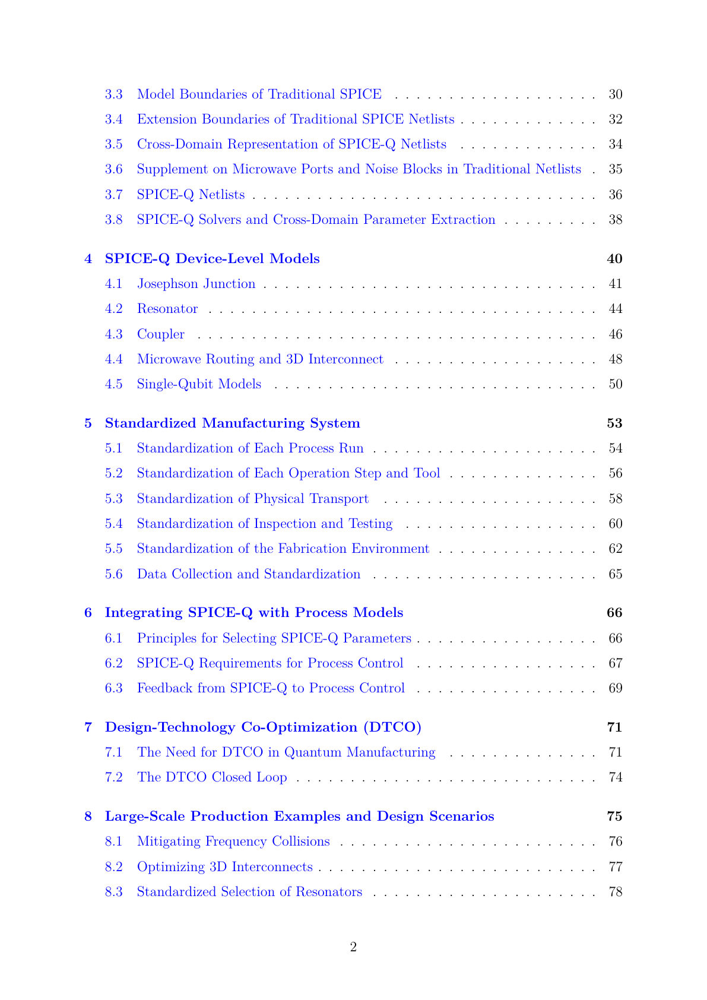
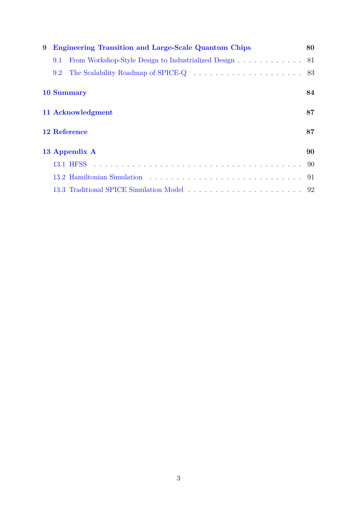
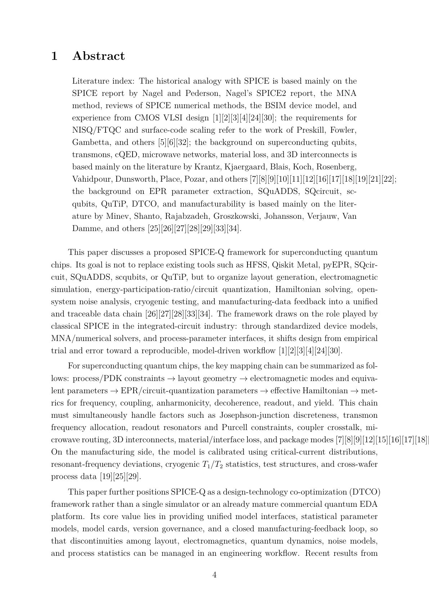
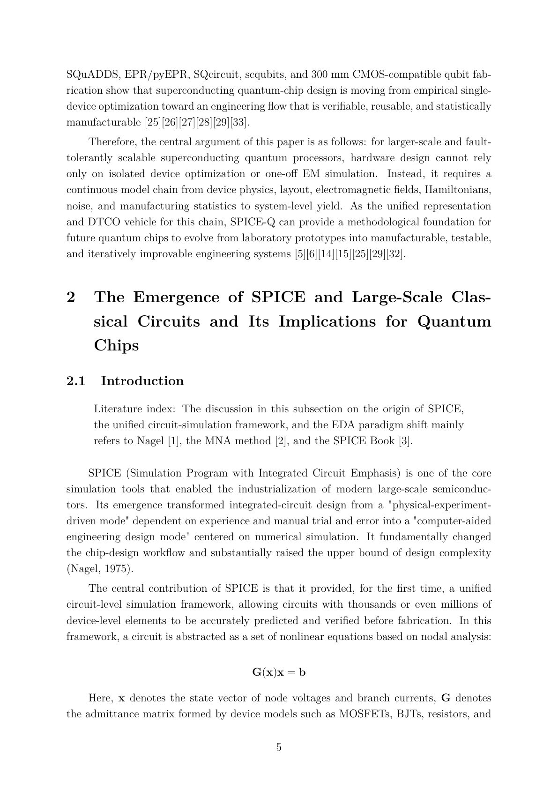
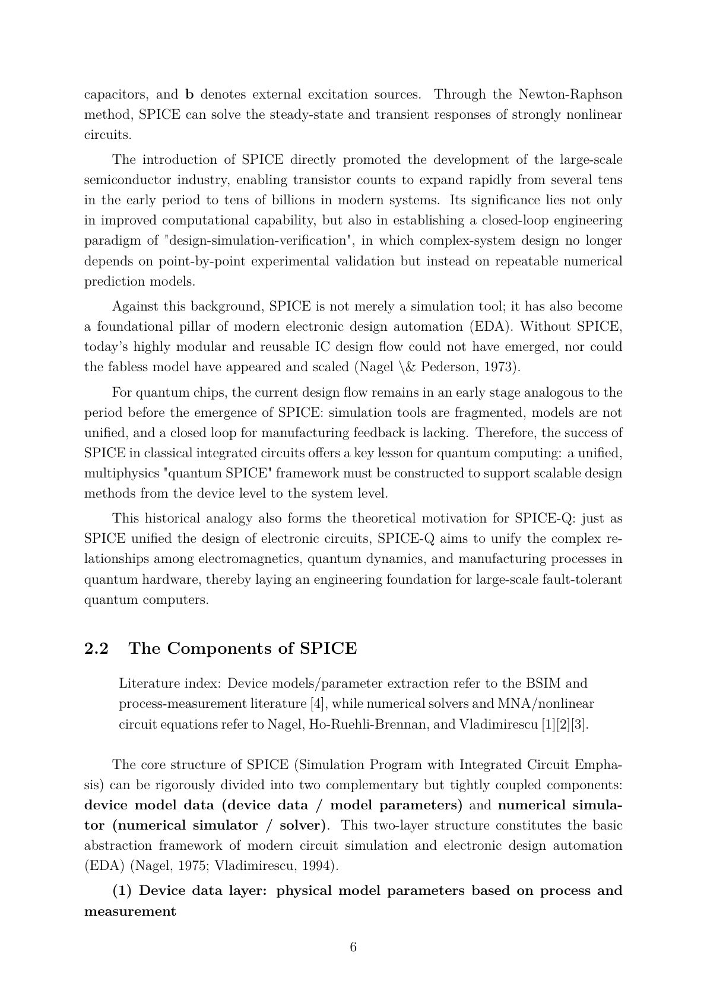
Summary. This paper introduces SPICE-Q, a comprehensive framework designed to industrialize superconducting quantum chip design. It solves the problem of fragmented simulation tools by creating a unified data chain connecting electromagnetics, device physics, Hamiltonian dynamics, and manufacturing statistics. This shift treats quantum hardware development as a rigorous engineering workflow necessary for scaling fault-tolerant computation.
Why it may be interesting. It provides a crucial engineering roadmap for applying advanced open-system dynamics and many-body techniques by formalizing the interface between electromagnetic field theory and quantum information processing models.
Main problem. The design of large-scale, fault-tolerant superconducting quantum processors requires a unified engineering workflow that connects device physics to system performance.
Main result. SPICE-Q proposes a Design-Technology Co-Optimization (DTCO) framework that treats quantum chip design as an industrial engineering process rather than isolated simulations.
Method. The framework unifies disparate simulation tools (EM solvers, Hamiltonian dynamics, classical circuit simulators) through standardized model interfaces and a traceable data chain.
Model / system. The system is superconducting quantum chips built from Josephson junctions, modeled by coupling electromagnetic field solutions to effective Hamiltonians describing qubit dynamics and noise channels.
Key observables. Frequency, coupling strength, anharmonicity, decoherence times ($T_1/T_2$), readout performance, and overall manufacturing yield.
Important parameters / regimes. Process constraints (PDK), Josephson junction variability ($\delta I_c$), resonator quality factors ($Q$), and 3D interconnect parasitics.
Assumptions / limitations. The core assumption is that scaling requires treating the entire design process—from physics to fabrication statistics—as a single, continuous, model-driven engineering workflow.
Paper structure. The paper builds an analogy with classical SPICE development (moving from physical equations to parameterized models) and applies this structure to quantum computing, detailing the necessary integration points between EM simulation, Hamiltonian extraction, and statistical yield analysis.
We propose SPICE-Q, a SPICE-inspired design-technology co-optimization framework for superconducting quantum processors. Rather than replacing tools such as HFSS, Qiskit Metal, pyEPR, SQcircuit, SQuADDS, scqubits, or QuTiP, SPICE-Q aims to connect them through a unified, traceable data chain spanning process rules, layout, electromagnetic simulation, energy-participation-ratio and circuit quantization, Hamiltonian extraction, noise analysis, cryogenic test, and manufacturing feedback. The central mapping is from process and PDK constraints to layout geometry, electromagnetic modes, equivalent circuit parameters, effective Hamiltonians, and finally metrics such as frequency, coupling, anharmonicity, decoherence, readout performance, and yield. This flow must capture Josephson-junction variability, transmon frequency allocation, resonator and Purcell constraints, coupler crosstalk, microwave routing, 3D interconnects, material/interface loss, package modes, and wafer-scale process statistics. By introducing standardized model interfaces, statistical parameter models, model cards, version governance, and closed-loop calibration from cryogenic and fabrication data, SPICE-Q frames superconducting quantum-chip design as an engineering workflow rather than a collection of isolated simulations. We argue that scalable and fault-tolerant quantum processors will require such a continuous model chain from device physics and electromagnetic fields to quantum dynamics, noise, manufacturability, and system-level yield.
Authors: Klaus M. Frahm, Leonardo Ermann, Dima L. Shepelyansky
Type: theory · Category: statistical mechanics · PDF: https://arxiv.org/pdf/2606.17965v1
Analysis basis: full PDF text, analyzed in chunks
Topic relevance: non-equilibrium dynamics 2/5 · driven-dissipative phase transition 1/5 · non-equilibrium universality 1/5
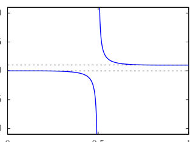
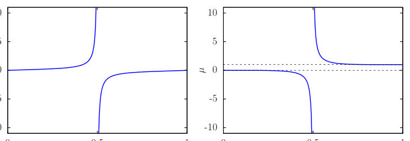
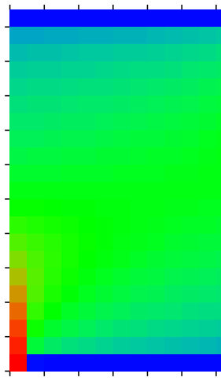
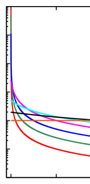
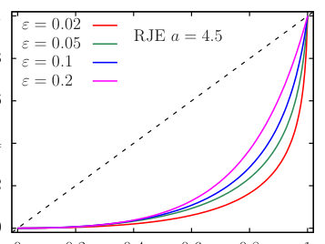
Summary. This paper applies statistical mechanics principles, specifically the Wealth Thermalization Hypothesis (WTH), to model global wealth inequality. It shows that the Rayleigh-Jeans thermal distribution accurately describes empirical data for household wealth and national GDP across decades. The work argues that this thermodynamic condensation mechanism provides a universal physical law governing social stratification.
Why it may be interesting. It provides a powerful analogy between condensed matter physics concepts like thermalization and condensation (RJ phenomenon) and macroscopic socio-economic phenomena like global wealth distribution, suggesting universal physical laws govern social structures.
Main problem. To provide a thermodynamic description of global wealth inequality using the Wealth Thermalization Hypothesis (WTH).
Main result. The Rayleigh-Jeans (RJ) thermal distribution provides a universal and good description for various real-world curves related to wealth inequality, such as Lorenz curves for household wealth, GDP, and stock markets.
Method. The analysis involves deriving analytical expressions for the Lorenz curve and Gini coefficient using continuous models like RJS and RJE spectra, and fitting these theoretical predictions to empirical economic data.
Model / system. The system is modeled as 'Social Stratification in a Society' (SSS) where wealth layers are associated with energy levels governed by a nonlinear dynamical system conserving total energy and probability norm. The core model uses the RJS and RJE spectra derived from statistical mechanics principles.
Key observables. Lorenz curve ($w$ vs $h$), Gini Coefficient ($G$), Pareto Probability Distribution ($C(w_m)$), Temperature ($T$), Chemical Potential ($\mu$).
Important parameters / regimes. The energy parameter $\epsilon$, the spectral parameters $a$, and the regime of condensation (e.g., low $\epsilon$ for strong inequality).
Assumptions / limitations. The system undergoes dynamical thermalization governed by weak nonlinear perturbations, allowing the use of a grand canonical ensemble description.
Figures summary. Figures compare theoretical Lorenz curves (RJS/RJE) and Pareto distributions against real-world data for household wealth (World 2021), GDP evolution (UN data 1973–2023), and stock markets, demonstrating quantitative agreement.
Paper structure. The paper progresses from establishing the WTH framework to deriving analytical solutions for key diagnostics using RJS/RJE models. It then systematically applies these models by fitting parameters to diverse datasets (household wealth, GDP, etc.) to argue for universality.
According to the recent Wealth Thermalization Hypothesis (WTH) the wealth inequality in the world is described by the Rayleigh-Jeans (RJ) thermal distribution of interacting agents in a society with social stratification. In this concept, the wealth layers of society are associated with energy levels from a nonlinear dynamical system conserving two integrals of motion being total energy and probability norm. This leads to RJ condensation and the formation of a huge poverty phase of low wealth and a tiny oligarchic phase that captures a main part of total society wealth. This RJ phenomenon has similarities with self cleaning in multimode optical fibers and constraint driven condensation in various physical systems. We analyze real Lorenz and Pareto curves for wealth of households in countries and the world, Gross Domestic Product of countries, market capitalization of companies at stock exchange of Hong Kong, Shanghai, London, bitcoin transactions, world trade between countries and show that the WTH theory gives a good description of these curves. On the basis of this comparison we argue that the RJ thermal distribution provides a universal description of wealth inequality in the world.
Authors: Cai, Ling Qiao, Bin Yang, Fumin Luo, WeiGui Guo, GuoRong Zhang, XueFei Liu, Fan Xu, Qinglang Guo, Bin Wu
Type: theory · Category: quantum information and computing · PDF: https://arxiv.org/pdf/2606.17899v1
Analysis basis: full PDF text, analyzed in chunks
Topic relevance: QC/QI experiment 2/5
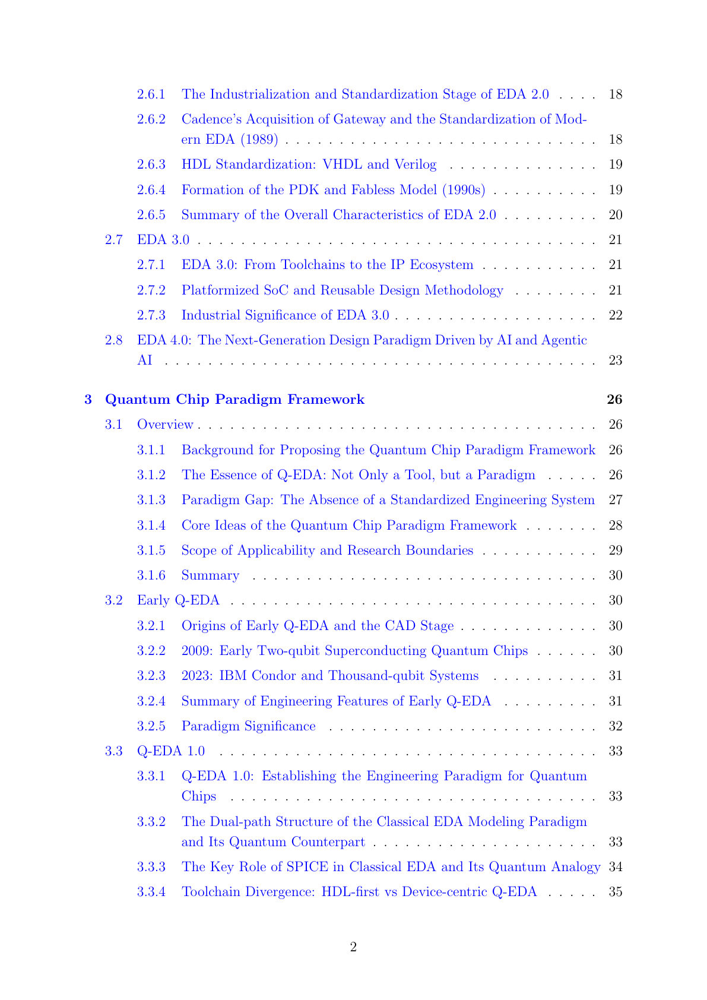
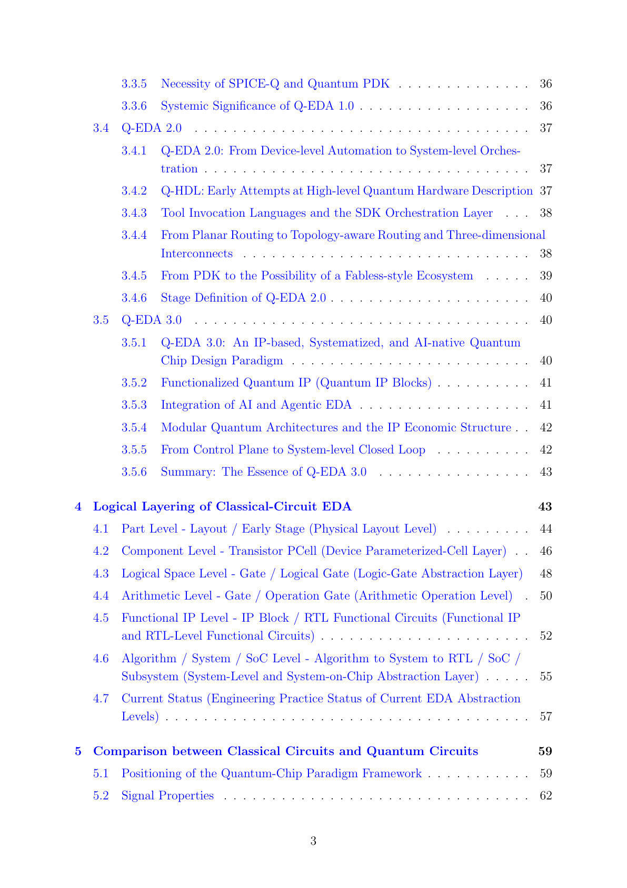
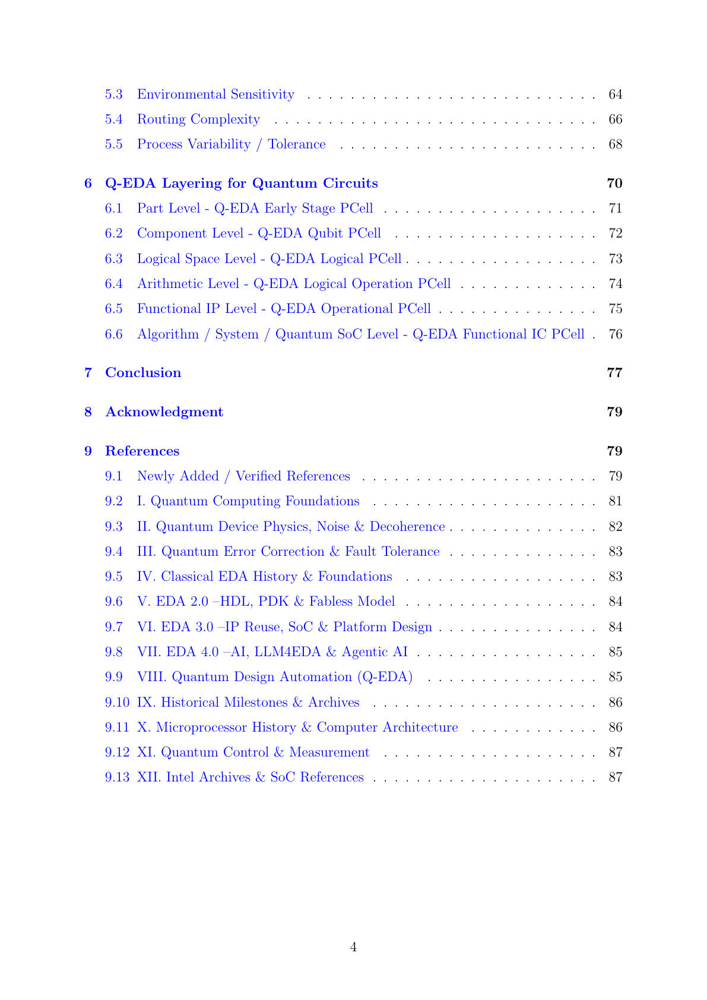
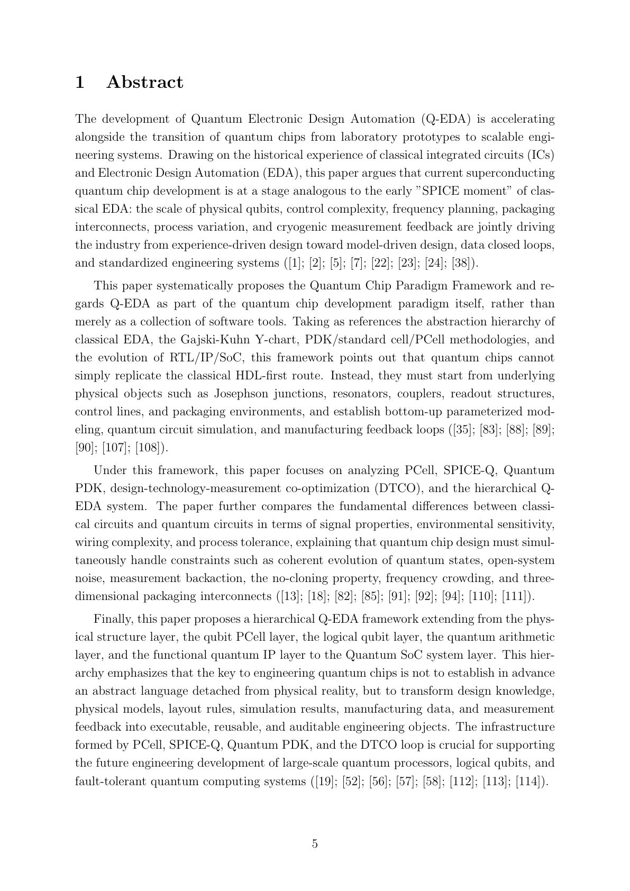
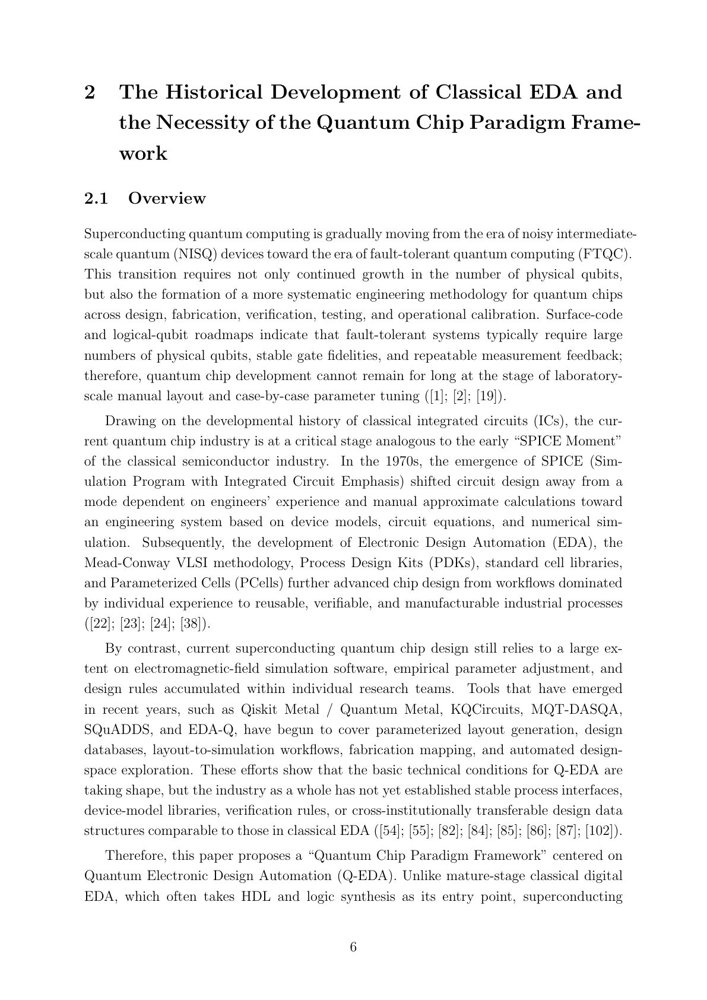
Summary. This paper outlines the 'Quantum Chip Paradigm Framework' necessary to industrialize superconducting quantum computing. It argues that Q-EDA must adopt a bottom-up, physical modeling approach, mirroring classical EDA advancements. The framework establishes a staged roadmap for achieving scalable, fault-tolerant quantum processors by standardizing design knowledge from physics down to system integration.
Why it may be interesting. It provides a crucial engineering blueprint for scaling quantum computation, framing the theoretical physics problem within the practical constraints of semiconductor manufacturing and system integration.
Main problem. The development of Quantum Electronic Design Automation (Q-EDA) is required to scale superconducting quantum chips from laboratory prototypes to reliable, fault-tolerant engineering systems.
Main result. The paper proposes a comprehensive 'Quantum Chip Paradigm Framework' that mandates treating Q-EDA as a full development paradigm, necessitating a bottom-up approach starting from physical device models.
Method. It draws an analogy between the current quantum design challenges and the historical 'SPICE moment' in classical EDA, advocating for a structured, hierarchical methodology.
Model / system. The system is superconducting quantum chips, modeled using underlying physical components like Josephson junctions, resonators, and couplers. The framework proposes a hierarchy from physical structures $\rightarrow$ qubit PCells $\rightarrow$ logical qubits $\rightarrow$ functional IP $\rightarrow$ Quantum SoC.
Key observables. Gate fidelities, coherence time, crosstalk structures, resource overhead (T gates/Toffoli), and overall system error budgeting.
Important parameters / regimes. Qubit frequency planning, control complexity, packaging interconnects, and the need for Design-Technology-Measurement Co-optimization (DTCO).
Assumptions / limitations. The framework assumes that progress requires standardizing design knowledge into reusable, auditable engineering objects across all abstraction levels.
Figures summary. Not specified in detail, but the structure implies a progression through different layers of abstraction for quantum chip design.
Paper structure. The paper traces the evolution of EDA from classical IC design (SPICE moment) to propose a multi-stage Q-EDA roadmap (1.0 $\rightarrow$ 2.0 $\rightarrow$ 3.0), emphasizing physical modeling and closed-loop optimization.
Quantum Electronic Design Automation (Q-EDA) is emerging as quantum chips move from laboratory prototypes to scalable engineering systems. This paper argues that superconducting quantum chip design is approaching a "SPICE moment" similar to early classical EDA, where growing qubit scale, control complexity, frequency planning, packaging, process variation, and cryogenic measurement feedback require a shift from experience-based design to model-driven engineering. We propose a Quantum Chip Paradigm Framework that treats Q-EDA not only as software, but as part of the quantum chip development paradigm. Unlike classical HDL-first design, quantum chip design must begin with physical structures such as Josephson junctions, resonators, couplers, readout elements, control lines, and packaging environments. The framework emphasizes PCell-based modeling, SPICE-Q simulation, Quantum PDKs, and design-technology-measurement co-optimization. We further outline a hierarchical Q-EDA system spanning physical structures, qubit PCells, logical qubits, quantum arithmetic, functional quantum IP, and Quantum SoC systems. The key goal is to turn physical models, layout rules, simulation results, fabrication data, and measurement feedback into reusable and auditable engineering objects for large-scale quantum processors and fault-tolerant quantum computing.
Authors: Jaroslav Hrdina, Dietmar Hildenbrand, Oliver Rettig
Type: theory · Category: quantum information and computing · PDF: https://arxiv.org/pdf/2606.17621v1
Analysis basis: full PDF text, analyzed in chunks
Topic relevance: entanglement & information structure 2/5
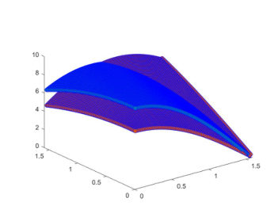
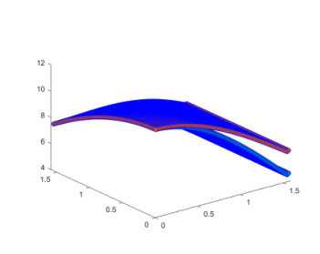
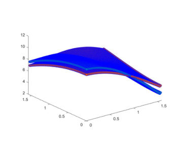
Summary. This paper introduces Quantum Computing Algebra (QCA), a novel formalism built on real geometric algebra with a split signature to simplify quantum computation implementation. It successfully maps complex concepts like multi-qubit gates and entanglement into algebraic products, demonstrating its utility by simulating payoffs in quantum game theory models.
Why it may be interesting. The development of a concrete, computationally efficient algebraic framework (QCA) that bypasses complex matrix exponentiation by using geometric algebra is highly relevant. It offers a novel mathematical toolset for simulating quantum dynamics and entanglement in systems where direct Hamiltonian simulation becomes intractable.
Main problem. The paper aims to develop a practical framework for quantum computation by bridging abstract Dirac formalism with efficient computational implementation using Geometric Algebra (GA). It specifically addresses the need for an algebraic structure suitable for real-number computation.
Main result. A Quantum Computing Algebra (QCA) based on a split-signature construction is proposed, successfully translating quantum mechanics into a real geometric algebra framework. This allows for efficient representation and calculation of multi-qubit systems and entangled strategies in applications like quantum game theory.
Method. The authors utilize Geometric Algebra (GA) to represent qubits and operators, employing a split-signature approach within a real Clifford algebra structure. They derive algebraic rules for tensor products and map fermionic creation/annihilation operators to qubit gates.
Model / system. The model centers on multi-qubit quantum systems, initially described by the spinor $\psi \in \mathbb{C}^2$ for single qubits. The theory extends this using an algebraic structure derived from Witt generators and idempotents, allowing simulation of complex interactions like those in quantum game theory.
Key observables. Payoffs ($\pi_A, \pi_B$) calculated in quantum game theory scenarios (e.g., Prisoner's Dilemma), and the probabilities ($P_{AA}, P_{AB}$, etc.) describing the final entangled state $|\psi_f angle$.
Important parameters / regimes. Entanglement parameter $\gamma$, individual player strategy parameters ($\psi_1, \psi_2$), and the algebraic structure defined by the split signature.
Assumptions / limitations. The primary assumption is that using real geometric algebras via a split-signature construction provides a significant computational advantage over previous positive-definite methods for practical implementation on real computers.
Figures summary. Figures illustrate the Bloch sphere basis states, the EWL quantization protocol scheme for two qubits, and 3D plots showing calculated payoffs ($\pi_A$ vs $\psi_A$, $\pi_B$ vs $\psi_B$) under varying entanglement conditions ($\gamma$).
Paper structure. The paper progresses by first establishing the QCA framework using split-signature GA (Chunk 1). It then details how to represent multi-qubit gates and tensor products algebraically, including mapping fermionic operators via Jordan-Wigner transformation (Chunk 2). Finally, it applies this machinery to model quantum game theory payoffs for systems like the Prisoner's Dilemma (Chunks 3 & 4).
We present a real geometric algebra framework designed for the direct translation of the Dirac formalism into geometric algebra representations. Unlike previous approaches based on positive-definite signatures, QCA employs a split-signature construction that enables a natural realization of quantum states and operators while simplifying computational implementation. We further present an implementation of QCA using the \textit{GAALOP} software and show how quantum gates and multi-qubit systems can be efficiently represented and generated computationally. As an application, we demonstrate the use of QCA in quantum game theory, where the real-algebraic formulation provides computational advantages for modeling entangled strategies and quantum interactions. The proposed framework establishes a practical bridge between the abstract formalism of quantum computation and efficient geometric algebra implementations.
Authors: Jesper Lykke Jacobsen, Kay Joerg Wiese
Type: theory · Category: statistical mechanics · PDF: https://arxiv.org/pdf/2606.18125v1
Analysis basis: full PDF text, analyzed in chunks
Topic relevance: Keldysh / 2PI / non-Gaussian methods 1/5 · analog quantum simulation 1/5 · correlated / nonlocal dissipation 1/5 · driven-dissipative phase transition 1/5 · entanglement & information structure 1/5 · methods for driven-dissipative 1/5 · non-equilibrium dynamics 1/5 · non-equilibrium universality 1/5
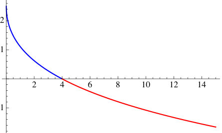
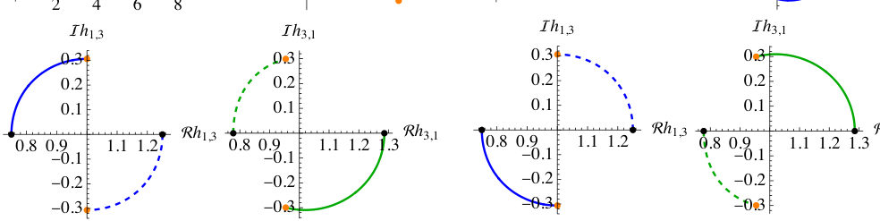
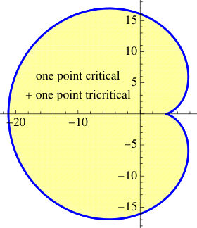
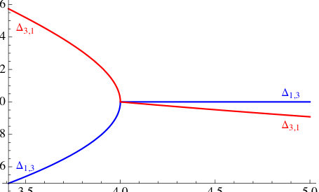
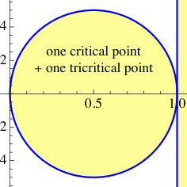
Summary. This paper investigates the complex Conformal Field Theory associated with the 2D Q-state Potts model, extending its analysis beyond the standard physical regime ($Q \le 4$). By treating $Q$ as a continuous or complex variable, the authors propose that CFT data can be found through analytic continuation of known results. This work is significant for mapping out the full theoretical landscape of this critical system.
Why it may be interesting. While focused on statistical mechanics, the rigorous mapping to CFTs provides deep insights into universality classes and non-unitary theories, which share mathematical structures relevant to open quantum systems and boundary physics.
Main problem. The study aims to extend the understanding of Conformal Field Theories (CFTs) associated with the two-dimensional Q-state Potts model into regimes where the number of states, Q, is greater than 4 or complex.
Main result. The authors conjecture that all conformal data for this extended regime can be obtained by analytic continuation from known exact results for $Q \le 4$, establishing a framework for complex CFTs in this model.
Method. The research combines analytical derivations, numerical transfer-matrix computations, and advanced techniques like minigrid extrapolation to map out the parameter space of the associated CFTs.
Model / system. The system is the two-dimensional Q-state Potts model defined on a triangular lattice, which is reformulated into an equivalent loop model whose partition function allows for continuous variation of $Q$.
Key observables. Central charge ($c$), critical exponents, three-point structure constants ($\omega$), and the location of fixed points ($z_c$).
Important parameters / regimes. The number of states, Q (treated as a complex variable), and the lattice size $L$ (used for extrapolation).
Assumptions / limitations. The primary assumption is that the CFT data can be obtained via analytic continuation from the well-understood regime where $Q \le 4$.
Figures summary. Figures illustrate paths in the complex Q-plane, convergence of extrapolated parameters ($z_c, c, \omega$) as $L o \infty$, and stability domains defined by conformal dimensions.
Paper structure. The paper systematically analyzes the model's fixed points across different Q regimes (real vs. complex), develops mathematical tools using transfer matrices and CFT techniques (like Dotsenko-Fateev formulas), and concludes with extensive numerical extrapolation of critical parameters.
The two-dimensional $Q$-state Potts model with real couplings has a first-order transition for $Q>4$. Starting from a triangular-lattice Potts model with two- and three-spin interactions, we study an equivalent loop model in which $Q$ is a continuous parameter. By a combination of analytical and numerical arguments, we show that this loop model allows for the collision of a critical and a tricritical fixed point at $Q=4$. These then emerge as a pair of complex conformally invariant theories at $Q>4$, or even complex $Q$, for suitable complex coupling constants. We conjecture that all conformal data (such as the central charge, critical exponents, and three-point structure constants) can be obtained by analytic continuation of known exact results for the loop model with $Q \le 4$. This conjecture is checked, both for real $Q>4$ and for $Q \in \mathbb{C}$, by extensive transfer-matrix computations and comparison to previous studies for $Q=5$.
Authors: Jiawei Hu, Hongwei Yu
Type: theory · Category: other · PDF: https://arxiv.org/pdf/2606.17396v1
Analysis basis: full PDF text, analyzed in chunks
Topic relevance: Keldysh / 2PI / non-Gaussian methods 1/5 · correlated / nonlocal dissipation 1/5 · driven-dissipative phase transition 1/5 · interference shaping light 1/5 · methods for driven-dissipative 1/5 · non-equilibrium dynamics 1/5
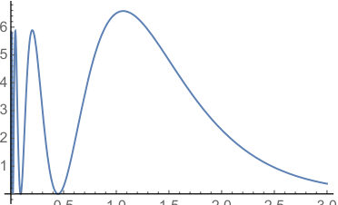
Summary. The paper theoretically demonstrates that uniform acceleration can induce spectral blind spots in atomic transitions by modifying light-matter coupling. These blind spots manifest as frequencies where both normal stimulated absorption and Unruh excitation are simultaneously suppressed, providing a unique signature of the Unruh effect through signal absence.
Why it may be interesting. This work provides a novel signature of the Unruh effect—a frequency-dependent absence of response rather than an expected enhancement—which is highly relevant for quantum optics and open system dynamics in non-inertial frames.
Main problem. The study investigates how uniform acceleration fundamentally alters the stimulated light-matter interaction response of an atom, potentially leading to frequency-selective spectral blind spots.
Main result. Spectral blind spots occur at discrete frequencies where both ordinary stimulated absorption and acceleration-induced Unruh excitation simultaneously vanish for photons with transverse momentum.
Method. The analysis uses quantum electrodynamics formalism applied to a two-level atom coupled to a massless scalar field along an accelerated trajectory, involving Bessel functions.
Model / system. The system is a uniformly accelerated two-level atom interacting weakly with the quantized electromagnetic vacuum field. The calculations distinguish between oblique ($k_\perp eq 0$) and collinear ($k_\perp = 0$) driving fields.
Key observables. Stimulated transition probability, spectral blind spots (frequencies where absorption and excitation vanish).
Important parameters / regimes. Proper acceleration ($a$), atomic transition frequency ($\omega_0$), transverse photon momentum component ($k_\perp$).
Assumptions / limitations. Weak coupling ($\lambda$) is assumed, and the analysis focuses on uniform acceleration trajectories in natural units.
Figures summary. Figure 1 plots a function involving modified Bessel functions of the second kind, $K_2 i\omega_0/a(k_\perp/a)$, which governs both transition probabilities for transversely propagating photons.
Paper structure. The paper develops the theory by calculating transition amplitudes using field mode expansions along an accelerated path. It then derives and analyzes the resulting stimulated absorption and Unruh excitation probabilities, contrasting the results for oblique versus collinear driving fields to pinpoint the spectral suppression mechanism.
Stimulated transitions are among the most fundamental processes in light-matter interaction, underlying resonant absorption and emission in atomic systems. Here we show that uniform acceleration can convert this familiar response into a frequency-selective absence of response. Specifically, when an incident photon has a nonzero momentum component transverse to the acceleration, the stimulated transition probability vanishes at a discrete set of frequencies fixed by the acceleration, the atomic transition frequency, and the photon propagation angle. At these spectral blind spots, both ordinary stimulated absorption and acceleration-induced excitation are simultaneously suppressed, rendering the atom effectively unresponsive to the incident radiation. The effect arises from the nontrivial response of accelerated atoms to quantum vacuum fluctuations and provides a distinctive signature of the Unruh effect through the absence, rather than the enhancement, of stimulated transitions. We further provide an order-of-magnitude estimate showing that an electron-based implementation with spin splitting in combined electric and magnetic fields could access the required parameter regime. These results reveal an unexplored form of acceleration-modified light-matter interaction and identify spectral blind spots as a new manifestation of the Unruh effect.
Authors: D. Mataragkas, A. Vasilopoulos, Z. D. Vatansever, Y. Kim, D. -H. Kim, N. G Fytas
Type: theory · Category: statistical mechanics · PDF: https://arxiv.org/pdf/2606.17691v1
Analysis basis: full PDF text, analyzed in chunks
Topic relevance: Keldysh / 2PI / non-Gaussian methods 1/5 · analog quantum simulation 1/5 · driven-dissipative phase transition 1/5 · methods for driven-dissipative 1/5 · non-equilibrium dynamics 1/5 · non-equilibrium universality 1/5
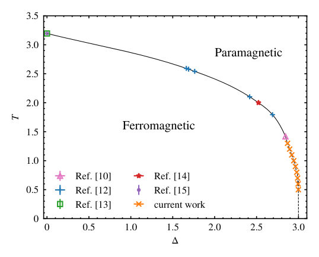
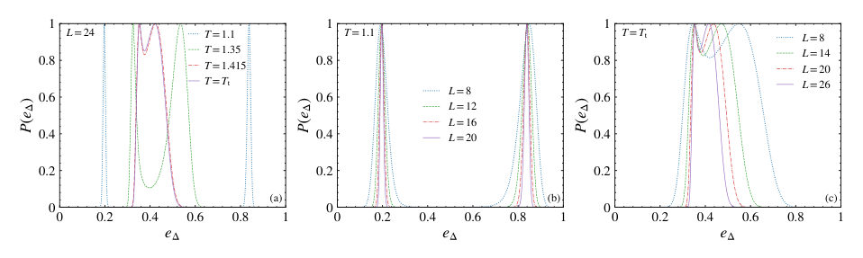
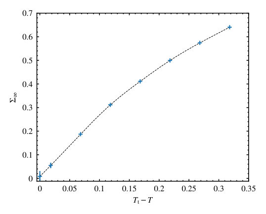
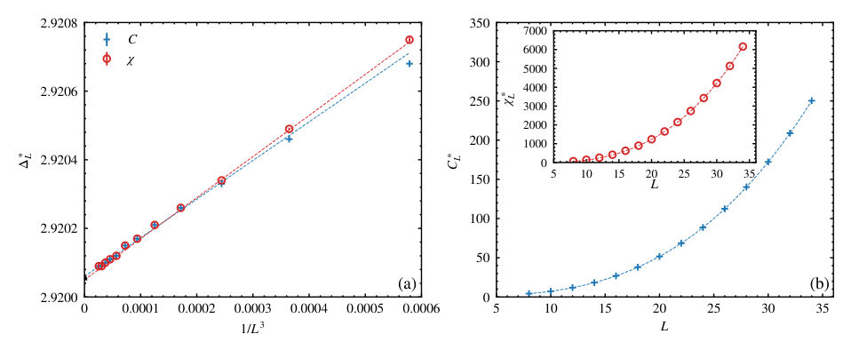
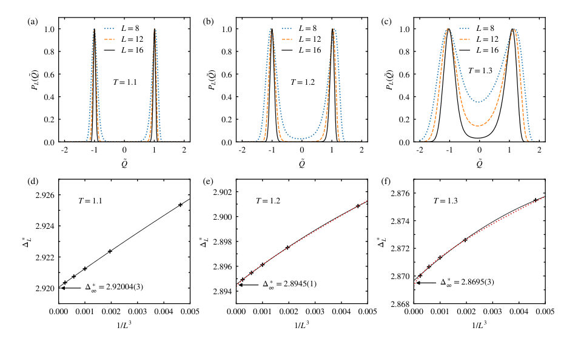
Summary. This work uses sophisticated Monte Carlo simulations to map out the first-order phase transition line in the 3D Blume-Capel ferromagnet. By analyzing energy distributions and free-energy barriers, the authors detail the crossover from weak to strong first-order behavior near the tricritical point. The study highlights both the success of their simulation methods and their inherent limitations when approaching critical points in higher dimensions.
Why it may be interesting. While focused on classical statistical mechanics, the use of advanced simulation techniques (like generalized ensemble methods) to precisely locate critical points and characterize crossover regimes is methodologically relevant for understanding quantum phase transitions in AMO systems.
Main problem. The study investigates first-order phase transitions in the three-dimensional Blume-Capel ferromagnet, focusing on characterizing the crossover behavior from weak to strong first-order regimes down towards low temperatures and connecting this regime to the tricritical point.
Main result. The analysis successfully characterizes the evolution of the energy probability density function and determines the interface tension approaching the tricritical region via its vanishing behavior. However, the field-mixing method shows increasing sensitivity limitations in 3D near the tricritical point for accessible system sizes.
Method. The research combines multicanonical simulations with two-parameter Wang-Landau sampling within a generalized-ensemble approach to study phase coexistence and finite-size scaling of thermodynamic observables.
Model / system. The model is the three-dimensional spin-1 Blume-Capel ferromagnet defined on a simple cubic lattice, governed by a Hamiltonian involving ferromagnetic exchange ($J$) and a crystal-field coupling ($\Delta$).
Key observables. Energy probability density function $P(e\Delta)$, free-energy barriers, interface tension ($\Sigma$), magnetic susceptibility ($\chi$), and pseudo-transition fields ($\Delta^*_L$).
Important parameters / regimes. Temperature ($T$) and crystal-field coupling ($\Delta$); the tricritical point $(\Delta_t, T_t)$ is a key focus.
Assumptions / limitations. The analysis assumes that finite-size scaling laws can be accurately applied to extrapolate bulk properties, though limitations are noted near the tricritical region due to numerical resolution issues in 3D.
Figures summary. Figures illustrate the phase diagram, show normalized probability distributions $P(e\Delta)$ revealing double-peaked structures, and plot the interface tension ($\Sigma_\infty$) as a function of temperature distance from the critical point.
Paper structure. The paper systematically applies advanced simulation techniques (MUCA/Wang-Landau) to map out the phase boundary. It analyzes finite-size scaling of observables like energy distributions and free-energy barriers, comparing results derived from direct sampling with those from field-mixing analysis along different parameters.
We investigate first-order phase transitions in the three-dimensional Blume-Capel ferromagnet on the simple cubic lattice by combining multicanonical simulations with two-parameter Wang-Landau sampling. The generalized-ensemble approach enables a detailed characterization of the coexistence region over a broad range of temperatures and crystal-field couplings, extending from the vicinity of the tricritical point deep into the first-order regime. We analyze the finite-size scaling behavior of thermodynamic observables, with particular emphasis on the energy probability density function, free-energy barriers, and interfacial properties. The evolution of the double-peaked energy distributions reveals a gradual crossover from weak to strong first-order behavior as the temperature is lowered. From the scaling of the free-energy barrier we determine the interface tension along the coexistence line and characterize its approach to the tricritical region through its vanishing behavior. In parallel, a field-mixing analysis based on the joint density of states obtained from two-parameter Wang-Landau simulations is employed to locate first-order transition points and probe tricritical behavior. While this approach has been highly successful in two-dimensional realizations of the Blume-Capel model, we find that in three dimensions its practical implementation becomes increasingly sensitive in the vicinity of the tricritical region, where the shallow structure of the relevant scaling variable distribution limits the ability to resolve coexistence conditions for the system sizes currently accessible. These results delineate the range of applicability of the method in three dimensions and provide a consistent picture of the first-order regime of the model.
Authors: Ilaria Maccari, Louk Rademaker, Giulia Venditti
Type: theory · Category: disordered systems and neural networks · PDF: https://arxiv.org/pdf/2606.17191v1
Analysis basis: full PDF text, analyzed in chunks
Topic relevance: Keldysh / 2PI / non-Gaussian methods 1/5 · analog quantum simulation 1/5 · correlated / nonlocal dissipation 1/5 · driven-dissipative phase transition 1/5 · methods for driven-dissipative 1/5
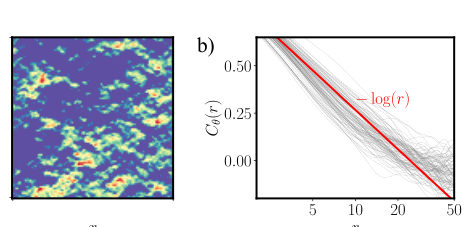
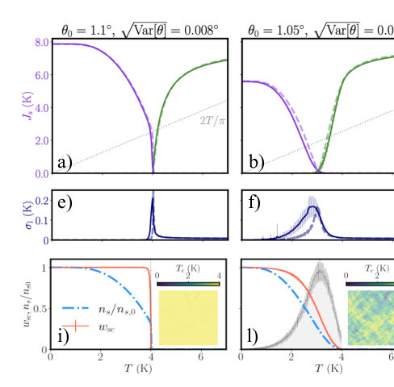
Summary. The paper demonstrates that spatially correlated disorder, inherent in moiré superconductors due to twist angle variations, fundamentally alters superconducting phase transitions. By modeling the system using a Random Impedance Network, the authors show that this correlation smears the BKT transition and masks intrinsic order parameter symmetries, suggesting $\sigma_1$ is the key diagnostic observable.
Why it may be interesting. This work is highly relevant because it uses advanced theoretical tools (elasticity theory coupled with network modeling) to analyze emergent phenomena in disordered quantum materials, providing diagnostic signatures ($\sigma_1$ vs. EMT failure) that are crucial for understanding complex many-body states.
Main problem. The study investigates how spatially correlated disorder, arising from twist angle inhomogeneities in moiré superconductors, masks the expected Berezinskii-Kosterlitz-Thouless (BKT) transition. Furthermore, this disorder obscures the ability to distinguish between different superconducting order parameter symmetries.
Main result. Correlated disorder smears the sharp BKT transition into a smooth crossover and causes low-temperature superfluid stiffness to decay in a manner mimicking nodal pairing, regardless of the true symmetry.
Method. The authors employ a Random Impedance Network (RIN) model built upon local critical temperatures ($T_{c,i}$) derived from elasticity theory describing twist angle variations. They compare these exact numerical results against simpler Effective Medium Theory (EMT) approximations.
Model / system. The system is modeled as two-dimensional superconductors, specifically twisted multilayer graphene in a moiré pattern. Disorder is introduced via long-range correlated fluctuations in the local critical temperature ($T_{c,i}$), which are governed by elasticity theory and result in $\log|r|$ correlations for the twist angle.
Key observables. Superfluid stiffness ($J_s$), real part of optical conductivity ($\sigma_1$), DC resistivity ($ ho$), and the local superconducting gap structure.
Important parameters / regimes. Twist angle variance ($ ext{Var}[ heta]$), mean twist angle ($ heta_0$), and temperature relative to local $T_c$ ($ au_i$).
Assumptions / limitations. The primary assumptions involve modeling disorder via continuum elasticity theory leading to long-range correlations, and using the RIN approach to solve for global transport properties.
Figures summary. Figures compare exact RIN solutions to EMT approximations across varying disorder strengths, showing how $\sigma_1$ retains a residual value in the presence of correlated disorder where EMT fails.
Paper structure. The paper establishes the theoretical framework using elasticity theory to derive long-range correlations ($C_ heta(r) \propto -\log|r|$). It then implements this into an RIN model, calculating transport observables ($\sigma_1$, $J_s$) and contrasting these exact results against the predictions of EMT.
Two-dimensional superconductors, including twisted multilayer graphene, should exhibit a BKT transition, and the $T$-dependence of the superfluid stiffness should distinguish between nodal or gapped order parameter symmetries. However, this picture dramatically changes when spatially correlated disorder is taken into account. Such correlations naturally arise in moiré systems due to twist angle inhomogeneities, which we model using elasticity theory. Using a random impedance network based on realistic disorder in the local $T_c$, we show that the finite-frequency conductance reveals a smeared percolative transition instead of a BKT transition. At low temperatures, the disorder can effectively obscure the distinction between nodal and fully gapped superconducting order parameters. We propose that the real part of the conductivity can be used as a key diagnostic observable to probe the relevance of correlated disorder.
Authors: Mina-Lou Schleith, Arthur Bril, Nick Bultinck
Type: theory · Category: strongly correlated electrons · PDF: https://arxiv.org/pdf/2606.17159v1
Analysis basis: full PDF text, analyzed in chunks
Topic relevance: Keldysh / 2PI / non-Gaussian methods 1/5 · Kondo & dissipative impurity 1/5 · analog quantum simulation 1/5
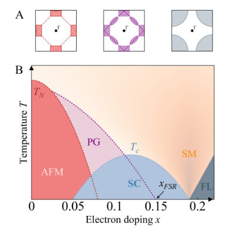
Summary. The paper constructs a theoretical framework describing how electrons fractionalize into spinons and chargons within the pseudogap phase of cuprates. It demonstrates that the resulting dipolar interaction, dictated by lattice symmetry, generates a repulsive pairing glue peaked at the antiferromagnetic wave vector. Solving the BCS equation with this interaction confirms the emergence of $d_{x^2-y^2}$ superconductivity.
Why it may be interesting. This work provides a detailed microscopic mechanism for high-Tc superconductivity in cuprates by linking it directly to emergent gauge symmetries and spin fluctuations, which is highly relevant to strongly correlated electron physics.
Main problem. The paper develops a theory for the transition from a fractionalized Fermi liquid ($ ext{FL}^*$) into a $d_{x^2-y^2}$ superconductor, focusing on the mechanism of Cooper pair formation.
Main result. A repulsive dipolar interaction, arising from the projective action of translation symmetry on spinon-chargon bound states, is shown to be necessary and sufficient to induce $d_{x^2-y^2}$-wave superconductivity via BCS theory.
Method. The authors derive an effective Hamiltonian by treating electrons as spinon-chargon bound states, calculating the resulting dipolar interaction potential, and solving the self-consistent BCS gap equation.
Model / system. The model starts from a spin-fermion description of electron doping in cuprates, utilizing concepts of fractionalization into spinons and chargons coupled by an emergent U(1) gauge symmetry.
Key observables. Superconducting order parameter $\Delta(\mathbf{q})$, average superconducting gap magnitude, and the effective dipolar interaction $V_{q_1, -q_1; q}$.
Important parameters / regimes. Electron doping level (small doping on top of half-filling), antiferromagnetic wave vector ($Q$), and parameters related to the gauge field coupling strength ($m$).
Assumptions / limitations. The analysis assumes the system can be described by a deconfined U(1) gauge theory in the pseudogap regime, and approximations are made regarding continuum limits and projecting interactions onto lowest-energy bands.
Figures summary. Figures illustrate the evolution of the Fermi surface with doping, schematic representations of the effective dipolar interaction in momentum space, and plots showing the BZ-averaged superconducting order parameter ($\Delta$) as a function of electron pocket fraction.
Paper structure. The paper proceeds by establishing the fractionalized description (spinon/chargon), deriving the Coulomb interaction potential via gauge field integration, calculating the effective dipolar interaction based on symmetry constraints, and finally solving the BCS gap equation using this repulsive interaction to confirm $d$-wave pairing.
Starting from the spin-fermion model or Hertz-Millis theory describing electrons coupled to anti-ferromagnetic spin fluctuations we develop a theory to describe the transition from a fractionalized Fermi liquid into a $d_{x^2-y^2}$ superconductor. We focus on small electron doping on top of the half-filled state. The doped electrons enter the system as spinon-chargon bound states, which form a small, reconstructed Fermi surface. The bound states are neutral under the emergent U(1) gauge symmetry of the fractionalized Fermi liquid, but interact via a dipolar two-body potential. We show that because of the projective action of translation symmetry on the spinons and chargons, the Fourier components of this repulsive dipolar interaction are peaked at the anti-ferromagnetic wave vector, thereby providing a robust microscopic mechanism for $d_{x^2-y^2}$ pairing in a fractionalized metal.
Authors: Soshun Ozaki, Kota Mitsumoto, Chisa Hotta
Type: theory · Category: strongly correlated electrons · PDF: https://arxiv.org/pdf/2606.18014v1
Analysis basis: full PDF text, analyzed in chunks
Topic relevance: Frenkel-Kontorova 1/5 · analog quantum simulation 1/5 · methods for driven-dissipative 1/5
Summary. This theoretical study develops an orbital-spin-lattice model to explain clusterization (trimerization) in transition metal oxides. The key finding is that while electronic interactions favor certain phases, the inclusion of lattice distortions is necessary to stabilize the experimentally observed trimer ground state. The authors use a combination of quantum ED and classical Monte Carlo simulations to map out complex phase diagrams.
Why it may be interesting. This work provides a comprehensive framework for understanding how structural degrees of freedom can stabilize exotic magnetic/orbital orders in strongly correlated materials, which is highly relevant to modern condensed matter theory.
Main problem. The study aims to microscopically understand how cluster formation, specifically trimerization, occurs in orbitally degenerate transition-metal compounds due to the interplay between spin, orbital, and lattice degrees of freedom.
Main result. Incorporating ionic lattice displacements is crucial; it qualitatively alters phase competition, leading to the robust stabilization of a trimerized ground state that was otherwise unstable or degenerate with other phases.
Method. The authors derive an effective orbital-lattice model and employ both quantum Exact Diagonalization (ED) for small clusters and classical Monte Carlo simulations for finite-temperature studies.
Model / system. The system models transition-metal compounds ($ ext{LiVS}_2$, $ ext{LiVO}_2$) with electrons in the $t_{2g}$ manifold, starting from a Kanamori-Hubbard Hamiltonian. The effective model incorporates quantum $S=1$ spin degrees of freedom coupled to lattice distortions.
Key observables. Ground state phases (Trimer, Zigzag, Ferri), specific heat ($C$), and structure factors ($S_X(q)$) used to diagnose ordering types.
Important parameters / regimes. Hund's coupling strength ($\eta = J_H/U$), lattice distortion parameter ($ u$), and elastic constant ($\kappa$).
Assumptions / limitations. The analysis relies on projecting the low-energy sector onto the local $S=1$ triplet manifold, and later simplifying this to a classical orbital-lattice model for large-scale simulations.
Figures summary. Figures illustrate phase diagrams showing transitions between Trimer, Zigzag, and Ferri phases as functions of coupling strengths ($\eta$ vs $ u$), and energy comparisons between different ordered states in both quantum and classical frameworks.
Paper structure. The paper progresses from deriving the effective orbital-lattice Hamiltonian to performing ground state calculations (ED) comparing various competing phases. It then extends this to finite temperature using Monte Carlo simulations, culminating in a detailed phase diagram analysis showing the role of lattice coupling.
We derive an effective orbital-lattice model with quantum $S=1$ degrees of freedom for transition-metal compounds, providing a microscopic understanding of cluster formation driven by the cooperative interplay of spin, orbital, and lattice degrees of freedom. Motivated by the trimerized phases observed in LiVS$_2$ and LiVO$_2$, we consider a triangular-lattice three-orbital system with two electrons per site occupying the threefold-degenerate $t_{2g}$ manifold. Starting from a multiorbital Kanamori-Hubbard Hamiltonian, we project the low-energy sector onto the local $S=1$ triplet manifold, in which two electrons occupy different orbitals according to Hund's coupling. The resulting effective model exhibits exchange networks whose geometry is determined by the orbital configuration. However, the orbital-driven exchange interactions alone do not stabilize the experimentally observed trimer phase. We find that by incorporating ionic lattice displacements that modulate transfer integrals and induce bond-dependent exchange couplings on shortened and elongated bonds, the phase competition is qualitatively altered, leading to the robust stabilization of a trimerized ground state within a fully quantum-mechanical framework. We further show that a simplified orbital-lattice model, in which the spin-exchange energy is replaced by effective bond energies, faithfully reproduces the essential ground-state properties of the microscopic model. This reduced description enables large-scale finite-temperature simulations and reveals a rich sequence of thermal phase transitions, including first-order, second-order, and Kosterlitz-Thouless transitions into distinct spin-, orbital-, and lattice-ordered phases.
Authors: Thomas Alfonsi, Jérôme Dorignac, John Palmeri, Nils-Ole Walliser
Type: theory · Category: statistical mechanics · PDF: https://arxiv.org/pdf/2606.18020v1
Analysis basis: full PDF text, analyzed in chunks
Topic relevance: Frenkel-Kontorova 1/5 · methods for driven-dissipative 1/5
Summary. This paper develops an exact theoretical framework to calculate equilibrium cluster statistics for particles binding on a one-dimensional ring. By analyzing cooperative and anticooperative interactions, it derives key observables like cluster size distributions using advanced combinatorial methods. The results provide quantitative benchmarks for understanding how local interactions dictate the global spatial organization of adsorbed species.
Why it may be interesting. The rigorous derivation of exact, finite-size statistical mechanics results for 1D systems provides crucial benchmarks that can be compared against more complex simulations or experimental measurements in biological contexts.
Main problem. The study focuses on determining the equilibrium clustering statistics for cooperative (attractive) and anticooperative (repulsive) binding interactions.
Main result. Exact finite-size expressions are derived for key observables like mean occupancy, domain walls, and cluster size distributions, characterizing how spatial organization changes with interaction strength.
Method. The analysis employs the grand-canonical formulation using both a transfer matrix approach and an advanced combinatorial cluster-based formalism to manage state space complexity.
Model / system. The model is a finite one-dimensional lattice gas of L sites with periodic boundary conditions, serving as a minimal system for adsorption/binding on ring-like substrates. The interactions are governed by nearest-neighbor coupling (J) and an effective chemical potential ($\mu$).
Key observables. Mean occupancy ($\langle\varphi angle$), mean number of domain walls ($\langle W angle$), mean number of clusters ($\langle K angle$), cluster-size distribution ($P(k)$), and site-weighted cluster-size distribution ($Q(k)$).
Important parameters / regimes. Interaction strength (J) and chemical potential ($\mu$). Key regimes include strong cooperativity, strong anticooperativity, and the noninteracting Hill-Langmuir limit.
Assumptions / limitations. The analysis relies on deriving exact expressions for finite periodic systems, utilizing a cluster-based combinatorial formulation to reduce state space complexity from $2^L$ to one scaling with integer partitions ($p(L)$).
Figures summary. Figures show contour plots of mean observables ($\langle\varphi angle$, $\langle W angle$, $\langle K angle$) versus interaction parameters, and parametric plots illustrating the dependence of cluster statistics on occupancy ($\langle\varphi angle$).
Paper structure. The paper systematically derives exact finite-size expressions for various correlation functions and observables using two complementary formalisms: a site-based transfer matrix approach and a combinatorial cluster-counting method. It analyzes limiting cases (e.g., $J o \pm\infty$, $J=0$) to characterize different binding regimes.
We study equilibrium clustering in a finite one-dimensional lattice gas of $L$ sites with periodic boundary conditions, as a minimal model for adsorption and binding on small ring-like substrates. Using a grand-canonical formulation with nearest-neighbor coupling, we derive exact finite-size expressions for the mean occupancy, the mean number of domain walls, and the mean number of clusters. Building on exact $k$-site correlation functions, we further derive expressions for the mean number of clusters of size $k$ and for two complementary size statistics: the cluster-size distribution, and the site-weighted cluster-size distribution. These observables characterize how spatial organization changes across attractive (cooperative) and repulsive (anticooperative) interactions, and highlight finite-size and parity-dependent effects of the underlying lattice, the latter being particularly pronounced near half filling in small systems. To access larger lattices without enumerating all $2^L$ microstates, we also develop a cluster-based combinatorial formulation in which configurations are classified by cluster counts and sizes, reducing the effective state space to a set whose size scales with integer partitions, $\approx e^{\sqrt{L}}$, rather than with $\approx e^{L}$. Taken together, our results provide exact benchmarks for finite periodic systems and suggest experimentally relevant cluster observables that complement occupancy-based measures of cooperativity, with particular relevance for binding on ring-like substrates for biological assemblies.
Authors: Yang Zhou
Type: theory · Category: strongly correlated electrons · PDF: https://arxiv.org/pdf/2606.17535v1
Analysis basis: full PDF text, analyzed in chunks
Topic relevance: Keldysh / 2PI / non-Gaussian methods 1/5 · driven-dissipative phase transition 1/5
Summary. This work provides a comprehensive microscopic theory explaining the Transdimensional Anomalous Hall Effect in rhombohedral graphite. It attributes the effect to a Stoner instability that induces spin-valley polarization ($\eta$), which simultaneously controls both the intrinsic and planar components of the anomalous Hall response. The theoretical framework successfully predicts key experimental signatures like the common critical temperature ($T_c$) across different magnetic field orientations.
Why it may be interesting. The detailed analysis of how a magnetic instability (Stoner) couples to structural/orbital effects (Peierls phase) to generate multiple correlated transport responses is highly relevant to understanding emergent quantum phenomena in strongly interacting electronic systems.
Main problem. The paper develops a microscopic theory for the Transdimensional Anomalous Hall Effect (TDAHE) observed in rhombohedral graphite.
Main result. The TDAHE is attributed to a flat-band Stoner instability coupled to Peierls-phase gap modulation, leading to a common critical temperature ($T_c$) governing both AHE and TDAHE responses.
Method. Theoretical calculations employing self-consistent Hartree-Fock methods, Dynamical Mean-Field Theory (DMFT), and comparison with Ising model simulations are used.
Model / system. The system is nine-layer rhombohedral graphite modeled by an $N$-layer ABC-stacked Hamiltonian. The physics hinges on the Stoner criterion ($U ho(\epsilon_F) > 1$) driving spin-valley polarization ($\eta$).
Key observables. Anomalous Hall Conductivity ($\sigma_{ ext{int}}^{xy}$), Transdimensional AHE component ($\sigma_{ ext{PHE}}^{xy}$), and the common critical temperature ($T_c$).
Important parameters / regimes. $N$ (number of layers, $N \ge 5$), Stoner interaction strength ($U ho$), orbital g-factor ($g_{ ext{orb}} \propto N-1$).
Assumptions / limitations. The theory assumes the TDAHE is governed by a single order parameter ($\eta$) and that correlation effects are captured by mean-field treatments, with DMFT confirming $Z$-independence.
Figures summary. Figures compare theoretical predictions of valley polarization $\eta(T)$ against experimental bounds, showing agreement in the 2D Ising critical fluctuation regime for $T_c$.
Paper structure. The paper progresses from identifying the TDAHE phenomenon to proposing the Stoner instability mechanism. It then derives the mathematical dependence of both Hall responses on the valley polarization $\eta$ and the orbital g-factor, culminating in quantitative predictions for $T_c$ and layer scaling.
A ``transdimensional'' anomalous Hall effect (TDAHE), where both in-plane ($\Bpar$) and out-of-plane magnetic fields produce hysteretic Hall signals, was recently observed in nine-layer rhombohedral graphite~\cite{Li2026Nature}. We present a microscopic theory attributing the TDAHE to a flat-band Stoner instability coupled to Peierls-phase gap modulation. The flat-band density of states satisfies the Stoner criterion $Uρ(\varepsilon_F) > 1$~\cite{Bultinck2020}, driving a spin-valley-locked ferromagnet whose valley polarization $η$ breaks time-reversal symmetry and generates an intrinsic anomalous Hall conductivity (AHC). The orbital $g$-factor $g_{\mathrm{orb}} = e d_0 v_F (N{-}1)/2 \propto (N{-}1)$ then lets $\Bpar$ modulate the gap, producing the transdimensional response $\propto η$. A self-consistent $2N$-band Hartree-Fock calculation yields complete valley polarization ($η\to 1$) below a mean-field transition $T_c^{\mathrm{MF}} \approx 2.2$~K, reduced by 2D-Ising critical fluctuations to the experimental $T_c \approx 1.6$~K, with $R_{xy} \approx 1.5$~k$Ω$. Because both Hall responses are carried by one order parameter $η$, they share a single $T_c$, as observed; $T_c$ is governed by the Stoner product $Uρ$ and is insensitive to the intervalley exchange, which only gates whether the valley-polarized phase forms, so the exchange strength is not a fitted parameter. Beyond reproducing $R_{xy}$, $T_c$, and the phase window, the theory predicts a sharp onset of valley polarization between $N = 7$ and $N = 9$, a symmetry selection rule fixing the crescent Fermi surface to the $m{=}1$ nematic channel, and a transdimensional-to-conventional Hall ratio $\sigmaPHE/\sigmaAHE^{\mathrm{tot}} = g_{\mathrm{orb}}\Bpar/m$ independent of $η$ and $U$. The $Z$-independence of the intrinsic AHC is verified within dynamical mean-field theory.
Authors: Niklas Forner, Marcel Kühn, Matthias Thamm, Bernd Rosenow
Type: theory · Category: disordered systems and neural networks · PDF: https://arxiv.org/pdf/2606.18164v1
Analysis basis: full PDF text, analyzed in chunks
Topic relevance: Keldysh / 2PI / non-Gaussian methods 1/5 · driven-dissipative phase transition 1/5
Summary. The paper develops a solvable transformer model to study Chain-of-Thought state tracking using permutation composition. By applying mean-field theory, the authors derive differential equations for order parameters describing attention retrieval ($A$) and logic alignment ($R$). The results reveal a predictable, staged learning process leading to a sharp transition in performance, offering mechanistic insight into how complex reasoning emerges from simple component interactions.
Why it may be interesting. This provides a rigorous, physics-based framework to analyze emergent computational capabilities (like CoT) within neural networks by mapping learning dynamics onto established concepts from statistical mechanics and phase transitions.
Main problem. The study investigates the training dynamics by which transformer models acquire the ability to perform multi-step, compositional state tracking (Chain-of-Thought). Specifically, it aims to understand how attention retrieval mechanisms and MLP logic modules co-develop during this process.
Main result. The learning process is characterized as staged: initially, the logic module learns a heuristic, followed by the attention mechanism locking onto the correct action, enabling efficient alignment of the MLP. This leads to a sharp, theoretically predictable transition in final rollout accuracy.
Method. The analysis employs a statistical-physics mean-field description, deriving coupled differential equations for macroscopic order parameters ($A$, $R$, and $S$) that govern the system's evolution over training time ($\alpha$).
Model / system. The model is a simplified, solvable one-block transformer trained on a permutation-chain task. It separates action retrieval (via RoPE attention) from state application (via a specialized MLP logic module). The task requires predicting states resulting from composing permutations.
Key observables. Attention order parameter ($A$), Teacher-matrix alignment ($R$), Off-target logic overlap ($S$), and final rollout accuracy ($\varrho_L$).
Important parameters / regimes. Training time ($\alpha$), sequence length ($L$), size of permutation set ($N$), and the coupling strength parameters derived from the mean-field ansatz.
Assumptions / limitations. The analysis relies on a solvable, constrained architecture; key approximations include using a mean-field description for the loss function and assuming Gaussian distributions for logits to derive continuous dynamics.
Figures summary. Figures illustrate the evolution of order parameters ($A, R, S$) over training time, showing agreement between simulated results and theoretical predictions derived from differential equations. Another figure tracks final rollout accuracy, predicting a sharp transition near convergence.
Paper structure. The paper first sets up the solvable transformer model for state tracking. It then derives mean-field dynamics by defining order parameters ($A, R, S$) based on attention and logic module overlaps. The core of the work involves solving coupled differential equations governing these parameters over training time ($\alpha$), culminating in a theoretical prediction for the final task accuracy.
Chain-of-thought generation can turn a multi-step computation into a sequence of locally checkable state updates, but the training dynamics by which transformers acquire such updates remain poorly understood. We study this question in a solvable setting: a simplified one-block transformer trained by supervised next-token prediction on state sequences generated by composing permutations. The architecture separates fixed-lag action retrieval, learned by RoPE attention, from a specialized MLP logic module that applies the retrieved permutation to the current state. Using a statistical-physics mean-field description, we derive dynamics for three order parameters measuring attention retrieval, teacher-matrix alignment, and off-target logic overlap. These equations quantitatively match simulations for the order parameters and, combined with a logit-distribution approximation, qualitatively predict the sharp transition in final rollout accuracy. The analysis reveals staged learning: the logic module first learns a mixed heuristic; attention then locks onto the relevant action, enabling efficient MLP alignment. Together, these results provide a controlled mechanistic account of how attention-based retrieval and MLP-based logic co-develop during chain-of-thought state tracking.
Authors: Samuel T. Elkin, Ghazi Khan, Ebrahim Forati, Brandon W. Langley, Dogan Timucin, Reza Molavi, Thomas E. Roth
Type: theory · Category: quantum information and computing · PDF: https://arxiv.org/pdf/2606.18140v1
Analysis basis: full PDF text, analyzed in chunks
Topic relevance: correlated / nonlocal dissipation 1/5 · methods for driven-dissipative 1/5
Summary. This paper introduces specialized singular vector finite element basis functions designed to overcome the limitations of standard FEM when simulating electromagnetic fields near sharp geometric features common in superconducting qubits. By incorporating these additive singular terms into tetrahedral elements, the authors achieve highly accurate results for critical parameters like energy participation ratios with computational costs drastically lower than commercial benchmarks.
Why it may be interesting. The accurate simulation of energy loss mechanisms in superconducting qubits is crucial for understanding decoherence rates ($ ext{T}_1$, $ ext{T}_2$), which are central topics in quantum information science. The method provides a powerful, computationally efficient tool to analyze these fundamental physical limits.
Main problem. Traditional Finite Element Method (FEM) basis functions fail to accurately model electromagnetic field behavior near singular features, such as those found in superconducting qubit geometries.
Main result. The development of specialized, additive singular vector basis functions allows for simulating complex electromagnetic structures with massive computational speedups while maintaining high accuracy comparable to commercial solvers.
Method. The authors derive and implement novel singular basis functions (node-singular, edge-singular, rotational) specifically tailored for tetrahedral elements in 3D electromagnetics.
Model / system. The work focuses on simulating electromagnetic fields within superconducting quantum circuits, such as GCPW resonators and Xmon qubits, where energy loss near geometric singularities dictates qubit coherence times.
Key observables. Participation Ratios (PMS, PMA, PSA) quantifying energy distribution at interfaces; Quality factor (Q); Field magnitude along singular lines.
Important parameters / regimes. Singular function order ($s=1, 2, 3$); Frequency ($\omega$); Material permittivities ($\epsilon_i, \epsilon_s$).
Assumptions / limitations. The simulation domain is assumed source-free and lossless for the primary derivations; higher-order terms require careful handling of continuity across element interfaces.
Figures summary. Figures illustrate field behavior comparisons (standard vs. singular functions) near wedges, show geometric associations of basis functions in tetrahedra, and compare calculated qubit parameters like capacitance and PMS against varying function orders.
Paper structure. The paper progresses from identifying the failure of standard FEM at singularities to developing node-singular, then edge-singular, and finally higher-order rotational basis functions. It validates these functions by applying them to calculate key superconducting qubit metrics (PRs, Q) and demonstrating massive computational efficiency gains over commercial tools.
Electromagnetic finite element method (FEM) implementations using traditional basis functions struggle to accurately represent field behavior near singular features such as conducting wedges. To combat this, specialized singular basis functions have been introduced to directly model the singular fields in these regions, leading to substantially improved performance. While these efforts have been pursued extensively in 2D, few functions have been developed for 3D elements. In this work, we develop basis functions for this in tetrahedra. Unlike prior functions, these basis functions are additive, meaning they are included alongside the standard vector basis functions to achieve more robust performance. Further, these functions are designed to be adaptable to tetrahedra touching several unique singular features by using combinations of basis functions singular with respect to each node and edge in the element, making them applicable to highly complex geometries. Higher-order interpolatory versions of the basis functions for modeling singular behavior with greater accuracy are also provided. These basis functions lead to substantial improvements in accuracy relative to the standard basis functions, and allow otherwise expensive simulations to be performed at far lower costs. As an application example, we perform simulations to extract critical quantities for designing superconducting qubits that significantly depend on the behavior of singular fields. In Ansys HFSS, this took 21.27 hours and a peak memory usage of 6.23 TB with 800 processors available, while using our singular basis functions achieved comparable results in 196 seconds while using 27.24 GB of memory and only 16 processors. Due to these benefits, our singular basis functions could be applied to enable design optimization of electromagnetic geometries with dominantly singular behavior, such as superconducting qubits.
Authors: Yang Zhang, Ling-Fang Lin, Adriana Moreo, Thomas A. Maier, Elbio Dagotto
Type: theory · Category: strongly correlated electrons · PDF: https://arxiv.org/pdf/2606.17273v1
Analysis basis: full PDF text, analyzed in chunks
Topic relevance: Keldysh / 2PI / non-Gaussian methods 1/5 · analog quantum simulation 1/5
Summary. This theoretical study uses advanced electronic structure calculations to map out the phase diagram of superconductivity in nickelates under strain. It finds that tensile strain stabilizes a favorable $s^{\pm}$-wave pairing state, while compressive strain suppresses it. The work provides crucial guidelines for engineering high-temperature superconductivity by controlling lattice strain and doping levels.
Why it may be interesting. Although focused on cuprate/nickelate physics, the methodology of using RPA to predict unconventional superconductivity based on orbital nesting and external tuning parameters (strain) is highly relevant to understanding correlated electron systems in general.
Main problem. The study investigates how mechanical strain (compression vs. tension) affects superconductivity in 1313-La$_3$Ni$_2$O$_7$ nickelate thin films.
Main result. Superconductivity is predicted to emerge via a robust $s^{\pm}$-wave pairing state specifically under tensile strain, while compressive strain suppresses it. The superconducting state requires an optimally sized $\gamma$ Fermi pocket.
Method. The research employs Density Functional Theory (DFT) combined with the Random-Phase Approximation (RPA) applied to a tight-binding model of the nickelate layers.
Model / system. The system is 1313-La$_3$Ni$_2$O$_7$, modeled as an alternating Single-Layer (SL)/Trilayer (TL) heterostructure. Calculations focus on the TL subsystem, analyzing its electronic structure and superconducting pairing instability.
Key observables. Superconducting pairing strength ($\lambda$), gap structures ($g_\alpha(\mathbf{k})$), self-doping effects, and Fermi surface pocket sizes ($\sigma$ at $\Gamma$, $\gamma$ at M).
Important parameters / regimes. Strain (compressive vs. tensile), electron/hole doping level ($n$), and the size of the $\gamma$ pocket.
Assumptions / limitations. The RPA calculation restricts pairing analysis to the TL subsystem, neglecting direct participation from the SL subsystem in the instability calculation.
Figures summary. Figures illustrate band structures and Fermi surfaces under different strain/doping conditions (LSAO vs. KTO). Gap structure plots show the predicted $s^{\pm}$-wave gap symmetry on tensile-strained films.
Paper structure. The paper systematically compares results obtained from simulations on LSAO substrates (compressive strain) versus those on KTO substrates (tensile strain), analyzing how doping and strain tune the pairing mechanism towards an optimal $s^{\pm}$ state.
Motivated by recent progress in the 1313-La$_3$Ni$_2$O$_7$ nickelate thin films (Nie et al., Nature {\bf 652}, 628 (2026)), we systematically investigate the effects of both compressive and tensile strain in this system. Self-doping effects between the single-layer (SL) and trilayer (TL) blocks are observed in our studies in both cases, but are most pronounced under tensile strain. We find that superconductivity is unlikely to emerge in the 1313 film on the LSAO substrate even with further hole doping. Remarkably, within the random-phase approximation, under {\it tensile} strain, a robust $s^{\pm}$-wave pairing state emerges in the TL subsystem with sign changes between the small electron-like $σ$ pocket at the $Γ$ point and the small hole-like $γ$ pocket at the M point. These pockets are connected by a wave vector close to $(π,π)$. Our calculations also suggest that superconductivity in 1313-LNO requires an optimally sized $γ$ pocket, because an oversized $γ$ pocket suppresses pairing formation. Overall, our results predict strain-dependent electronic reconstruction in 1313-La$_3$Ni$_2$O$_7$ and provide guiding principles for engineering superconductivity under ambient pressure conditions.
Authors: Shouzhen Gu, Lily Wang, Aleksander Kubica
Type: theory · Category: quantum information and computing · PDF: https://arxiv.org/pdf/2606.18145v1
Analysis basis: full PDF text, analyzed in chunks
Topic relevance: analog quantum simulation 1/5
Summary. The paper develops a Polynomial-Time Approximation Scheme (PTAS) for the minimum-weight decoding of 2D and higher-dimensional topological stabilizer codes. By adapting techniques from Euclidean geometry problems, it overcomes the NP-hardness barrier for this crucial task in fault-tolerant quantum computation. This provides a computationally efficient decoder that can approximate the true error correction weight to any desired accuracy.
Why it may be interesting. This work provides a powerful algorithmic tool for quantum error correction codes by transforming an intractable optimization problem into one solvable efficiently up to arbitrary precision $\epsilon$.
Main problem. The core problem is finding an efficient algorithm for minimum-weight decoding of two-dimensional topological translationally invariant (2D TTI) stabilizer codes.
Main result. The authors prove that this NP-hard decoding problem admits a Polynomial-Time Approximation Scheme (PTAS), guaranteeing a solution within $(1+\epsilon)$ of the true minimum weight in polynomial time.
Method. The method adapts Arora's PTAS for Euclidean problems, employing recursive lattice dissection and dynamic programming over 'portals' to solve subproblems.
Model / system. The study focuses on 2D TTI stabilizer codes (like the toric code), which are fundamental models used in fault-tolerant quantum computation. The decoding process involves finding a minimum-weight error operator consistent with an observed syndrome.
Key observables. Error weight ($|e|$), approximation ratio ($(1+\epsilon)$), and the syndrome ($\sigma$).
Important parameters / regimes. The accuracy parameter $\epsilon$, the lattice size $L$, and the dimension $D$ (generalizing from 2D to higher dimensions).
Assumptions / limitations. The analysis relies on structural properties like the Patching Property and Rerouting Property, which allow errors to be localized and manipulated across recursively defined regions.
Figures summary. Figures illustrate the TTI code structure, the recursive partitioning of the lattice into squares with 'portals,' and the dynamic programming steps used to combine solutions from smaller subproblems.
Paper structure. The paper builds by first establishing the NP-hardness of exact decoding, then developing a PTAS based on Arora's technique. The core is proving structural theorems (Patching/Rerouting) that enable solving the problem via dynamic programming over recursively dissected regions, culminating in the general $D$-dimensional extension.
Two-dimensional topological translationally invariant (2D TTI) stabilizer codes lie at the heart of fault-tolerant quantum computation, but using them requires solving the decoding problem. Minimum-weight decoding of these codes was recently shown to be NP-hard, even in basic settings, such as the color code with Pauli $Z$ errors and the toric code with Pauli $X$, $Y$ and $Z$ errors. Here, we prove that minimum-weight decoding of 2D TTI codes nonetheless admits a polynomial-time approximation scheme (PTAS), i.e., for any constant $\varepsilon>0$, a recovery operator of weight within a multiplicative factor of $1+\varepsilon$ of the minimum can be found in polynomial time. Our approach builds on Arora's PTAS for Euclidean problems, such as the traveling salesman problem, and applies when decoding can be cast in terms of point-like excitations connected by string-like errors. It therefore extends beyond two dimensions, covering certain higher-dimensional topological codes and quantum memories, including the toric code with phenomenological or circuit-level noise.
← Index · ← Previous · Next →